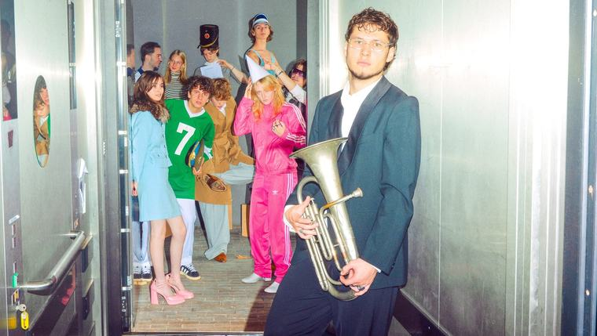

De Zelfmoordenaar

For the production group of the Groningen pre-training programme De Noorderlingen, Antiklimax wrote a thoroughly unhinged rewrite of The Suicide, Nikolai Erdman's once-banned Soviet satire.
Ten rudderless young adults, five overprotective parents, one glitter curtain and endless opinions on how to live and why you might die. A satirical comedy (12+) about death, life and everything in between.

Credits
- concept & text
- Antiklimax
- direction
- Lies van de Wiel
- performers
- Mees Alberts, Jip Kluwer, Ido Kootstra, Maaike Kroneman, Misha Leigh-Valles, Joan Leunge, Lente Mintjes, Oskar Moorlag, Sven Mulder, Daan Wieringa
- costumes
- Freja Roelofs, Demi Dijstelberge, Jonna Mulder
- design
- André Kok
- technical
- Herman van Keulen
- production
- Jente Rikken
- after
- De Zelfmoordenaar van Nikolaj Erdman
Performances
- 13–15 Nov 2026 Jonge Harten Festival, Groningen

photo: De Noorderlingen, Jonge Harten